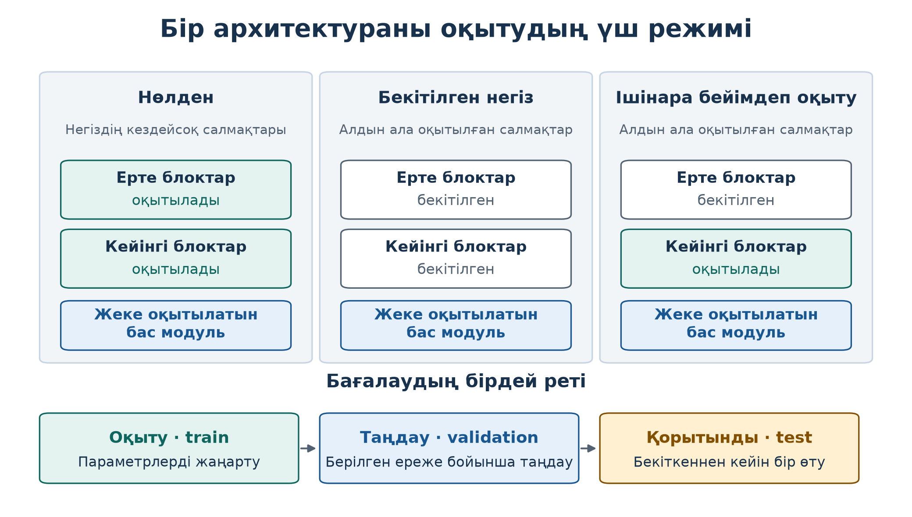
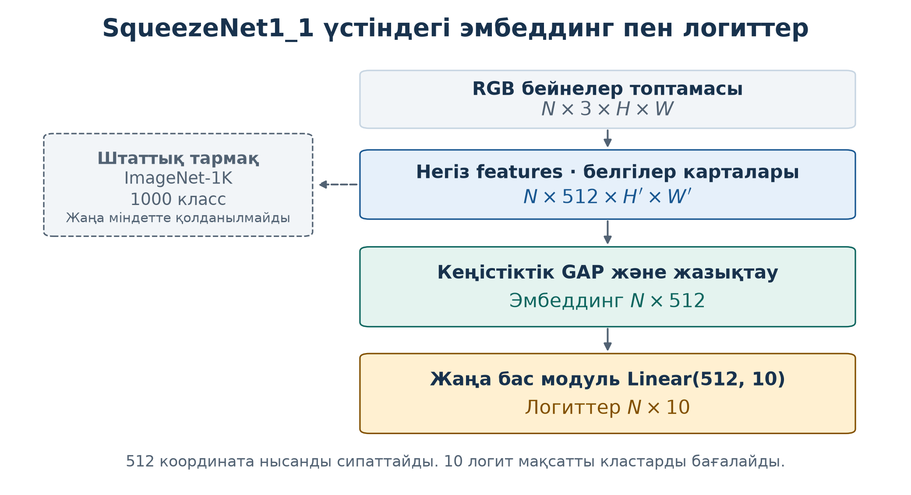
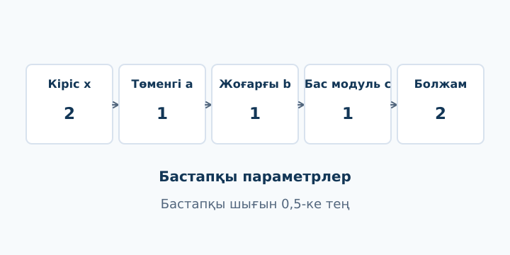
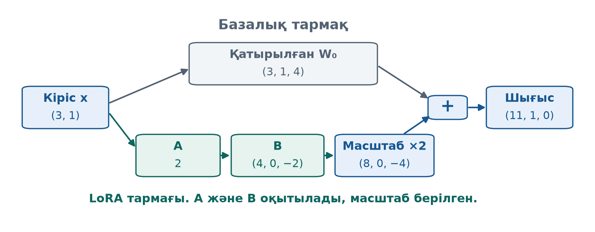
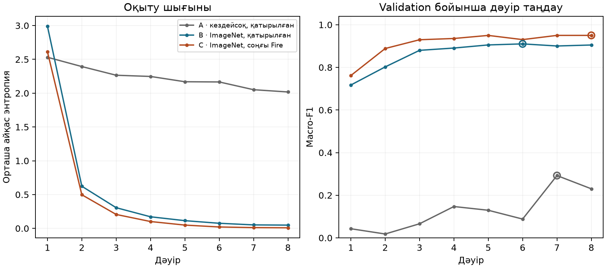
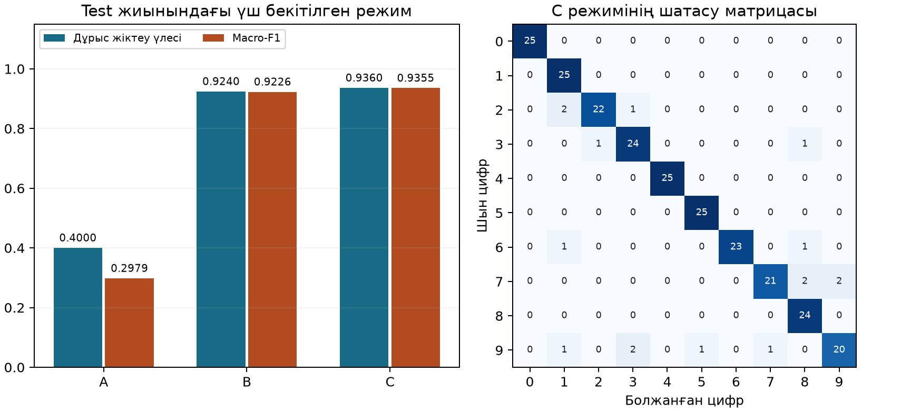

13-тарау. Алдын ала оқытылған модельдер, эмбеддингтер және тасымалды оқыту
13.1 Тақырып бағдары
Өндірістік желіде бөлшектерді сұрыптау үшін камера орнатылды. Бір айда бірнеше жүз сурет таңбаланды, бұл ретте ақау сирек кездеседі. Үйірткілі нейрондық желі шекаралар мен бедерді бөліп көрсете алады, алайда осындай жиынмен барлық сүзгіні оқыту тұрақсыз нәтижелер береді. Нұсқалардың бірі — бейнелермен бұрын оқытылған модельден бастап, оның белгілері жаңа желідегі ақауларды тануға көмектесе ме, соны тексеру. Табыс белгілерде ненің сақталғанына, мақсатты таңбалардың қалай алынғанына және тексеру кадрларының қолдану жағдайларына қаншалықты ұқсайтынына тәуелді.
Тарауды меңгергеннен кейін тасымалдаудың көзі мен мақсатын сипаттап, эмбеддингті бөліп алып, жаңа бас модульді жалғай аласыз; параметрлерді қатырып, таңдап босатып, бақылау тәжірибелерін жоспарлап, олардың нәтижесін түсіндіре аласыз. Зертханада ImageNet салмақтары бар SqueezeNet моделін қолданып, бірдей бөлінімде қолжазба цифрларын танудың үш режимін тексересіз. Бұл тәжірибе бейнелері мен таңбалары әртүрлі міндеттер арасындағы тасымалды көрсетеді. Өндірістік ақауларды тану үшін жеке деректер жиынтығы мен бөлек тексеру қажет болар еді.
Жұмыс үшін 4-тараудағы көпкласты жіктеу, 5-тараудағы валидация бойынша модель таңдау, 6-тараудағы регуляризация және 12-тараудағы эмбеддинг ұғымы қажет. Негізгі ұғымдар — бастапқы және мақсатты домендер (source and target domains), бақылау нүктесі (checkpoint), белгілерді бөліп алғыш (extractor), бас модуль (head), сызықтық сынама (linear probe), ішінара бейімдеп оқыту (partial fine-tuning), теріс тасымал (negative transfer) және адаптер (adapter).
13.2 Тасымалдың көзі, мақсаты және мәні
13.2.1 Мақсатты модель нені мұралайды
Алдын ала оқыту (pretraining) мақсатты міндетті шешуге дейін табылған параметрлерді береді. Бастапқы міндетте SqueezeNet ImageNet нысандарын жіктейді. Мақсатты зертханалық жұмыс 0-ден 9-ға дейінгі цифрларды жіктейді. Деректер жиынтығы, таңбалау және шығыстар шкаласы өзгерді. Оқытылған үйірткі сүзгілері бар бөліп алғыш тасымалданады. Он класты бас модуль мақсатты таңбалар бойынша оқытылады.
Дереккөз ретінде таңбаланған мысалдармен оқытылған модельді де, өздігінен бақыланатын оқыту (self-supervised learning) міндетін шешкен модельді де пайдалануға болады. Мысалы, BERT тілдік моделін алдын ала оқыту жасырылған токендерді болжауды қамтиды. Мәтінді жаңа жіктеу үшін тізбек векторын қолдануға немесе модельді жаңа бас модульмен бірге бейімдеп оқытуға болады. Мақсатты кластардың мағынасы жаңа міндеттің таңбалауымен беріледі. Бейне, мәтін немесе аудио үшін нақты бақылау нүктесінен тасымалдағанда, күтілетін кіріс пішімі мен бастапқы корпус ерекшеліктерін қоса, оның шектеулері де мұраланады.
Архитектураны, салмақтарды және кіріс түрлендіруін ажыратқан пайдалы. Архитектура амалдар мен тензор пішіндерін береді. Салмақтар берілген архитектурада табылған шешімді бекітеді. Түрлендіру өңделмеген нысанды өлшемділігі, арналар реті және шкаласы күтілетін тензорға айналдырады. Архитектура атауының сәйкес келуі өздігінен салмақтар мен түрлендірулердің сәйкес келетінін білдірмейді. Мысалы, кездейсоқ SqueezeNet пен ImageNet бақылау нүктесі бар SqueezeNet пішіндері бірдей болғанымен, бейнені векторға әртүрлі бейнелейді.
13.2.2 Домен және мақсатты міндеттегі тәуекел
Дереккөзді S арқылы, мақсатты T арқылы белгілейік. Әр доменде бақылаулар кеңістігі және олардың үлестірімі бар. Жіктеу үшін таңбалар кеңістігі мен кірісті таңбамен байланыстыратын ереже де беріледі. Мақсатты модель мақсатты үлестірімдегі тәуекел бойынша бағаланады. Таңдалған шығын функциясы үшін ол мынаған тең:
Егер нақты қолдану мысалдары әлі қолжетімсіз болса, бөлек қалдырылған тест өзінің іріктеу тәсілінің шегінде осы тәуекелді жуықтайды. Бастапқы модельдің жоғары дәлдігі бастапқы үлестірім мен бастапқы таңбаларды сипаттайды. Тасымал сапасын анықтау үшін жаңа таңбалар мен мақсатты деректердегі бағалау қажет. Күтілетін логарифмдік шығынды, macro-F1 мен қателер құнын міндетті қою кезінде-ақ ажыратқан пайдалы. Қолданылған шешім қабылдау ережесінде модель орташа шығынды азайтып, сонымен бірге сирек класты анықтау толықтығын нашарлатуы мүмкін.
Белгілер мен таңбалар кеңістіктері бірдей болғанда ығысудың әртүрлі түрі болуы мүмкін. Ковариаттық ығысу (covariate shift) кезінде кірістер үлестірімі өзгереді, ал берілген кірістегі таңбаның шартты үлестірімі сақталады. Мысалы, жаңа камера бүйірден жарық түсетін кадрлардың үлесін арттырды, ал ақауды таңбалау ережесі өзгермеді. Бұл мысал берілген бейненің таңбамен байланысы бұрынғыдай сақталғанда ғана ковариаттық ығысуға сәйкес келеді. Таңбалардың априорлық ықтималдықтары ығысқанда кластар ішіндегі кіріс үлестірімдері сақталып, кластар үлесі өзгереді. Ақау анықтамасы өзгергенде берілген кірістегі таңбаның шартты үлестірімі өзгеруі мүмкін. Бұл шарттарды тек таңбаланбаған кадрлармен тексеру әдетте мүмкін емес.
Бастапқы және мақсатты таңбалар әртүрлі нысандарды сипаттағанда бірдей y бойынша шартты үлестірімдерді тікелей салыстыру мағынасыз. ImageNet → Digits тәжірибесінде бастапқы белгілер жаңа бас модульге пайдалы болды ма, соны тексереміз. Доменді бейімдеу (domain adaptation) кезінде бақылау жағдайлары өзгерген бірдей немесе келісілген міндет жиі қарастырылады. Мысалы, бір ақаудың детекторын камералар арасында тасымалдауға болады. Ығысу механизмі мен мақсатты таңбалардың қолжетімділігі қандай тәжірибе жүргізуге болатынын және қандай деректер қажет екенін көрсетеді.
13.2.3 Тасымал нәтижені неге нашарлатуы мүмкін
Қабаттардың тасымалдануын зерттеген тәжірибелерде Yosinski және әріптестері нәтиженің бастапқы желіні қай жерден бөлетініне және міндеттердің қаншалықты ерекшеленетініне тәуелді екенін анықтады. Желінің ерте деңгейлеріндегі белгілер қарапайым жергілікті құрылымдарға жауап бере алады, ал кейінгі деңгейлердегі жауаптар бастапқы жіктеумен жиірек байланысты болады. Қабат тереңдігі өздігінен тасымалдануды анықтамайды. Бірге оқытылған блоктар кіретін белсендірулердің масштабтары мен үйлесімдеріне тәуелді. Жаңа доменге ортаңғы қабат, соңғы үйірткі картасы немесе бірнеше деңгейдің қоспасы пайдалы болуы мүмкін. Таңдау валидация бойынша тексеріледі.
Теріс тасымал алдын ала берілген мақсатты метриканың орынды бақылаумен салыстырғанда нашарлауын білдіреді. Кірістер мен таңбалау ережелерінің күрт айырмашылықтары тәуекел тудырады, бірақ әсердің таңбасы өлшеумен анықталады. Дереккөз үшін тиімді болған кескін мақсат үшін нәзік сигналды бәсеңдетуі мүмкін. Мысалы, желінің шағын ығысуларды елемеу қабілеті зат санатын тануға пайдалы. Баспа тақшадағы түйіспе ығысуын іздегенде осы қасиет ақауды жасыруы мүмкін. Кері жағы да бар: домендер едәуір ерекшеленсе де, бай кескін кейде сызықтық жіктеуішке пайдалы белгілер береді.
Зерттеуде тестегі алғашқы бағалауға дейін бақылауды анықтаған жөн. Тарауда бас модулі бірдей кездейсоқ және алдын ала оқытылған бөліп алғыштар, кейін қатырылған және ішінара бейімдеп оқытылған бөліп алғыштар салыстырылады. Бұл осы хаттамадағы салмақтар мен жергілікті бейімдеудің пайдасы туралы сұрақтарға жауап береді. Бүкіл желіні нөлден оқыту басқа сұраққа жауап береді. Онымен салыстыру жеке оңтайландыру бюджетін және валидация бойынша бөлек баптауды талап етеді.

Дереккөз: тасымал хаттамасының авторлық сызбасы.
13.3 Эмбеддинг және жаңа бас модуль
13.3.1 Векторды қай жерден алу керек
Эмбеддинг (embedding) — нысанның векторлық кескіні. 12-тарауда сөздің параметрлер кестесінен алынған эмбеддингі болды, ал құжат векторын біріктіру арқылы алуға болатын еді. Үйірткілі желіде бейне векторы барлық пиксельге және бөліп алғыштың таңдалған деңгейіне тәуелді. Алдымен кіріс бекітілген p түрлендіруінен, кейін F бөліп алғышынан өтеді, ал кеңістіктік карта қажет болса A операторымен ықшамдалады. Эмбеддингті z арқылы белгілейік.
A таңдауы вектордан нені білуге болатынына әсер етеді. Жаһандық орташалау (global average pooling, GAP) әр арнаға бір сан береді. Егер картаға d арнасы және H′ пен W′ кеңістіктік осьтері бар тензор сәйкес келсе, c арнасының саны кеңістік бойынша орташалаудан алынады.
Әр арнадағы қосындылары бірдей екі карта бірдей вектор береді. Бір арнаның шартты картасының жолдары (2, 0) және (0, 2) болсын. Қосынды 4-ке, орташа мән 1-ге тең. Жолдары (0, 2) және (2, 0) болатын карта да сол бірлікті береді. Екі бағдарды ажырататын міндетке кеңістіктік белгілер қажет болуы мүмкін. Егер айырмашылық басқа арналарда сақталса, бас модульді солармен оқытуға болады. Бір карта орташалау механизмін тексеруге мүмкіндік береді, бірақ бүкіл желінің сапасы туралы ештеңе анықтамайды.
SqueezeNet 1.1 моделінде Fire блогы алдымен арналарды 1×1 үйірткісімен сығады, кейін 1×1 және 3×3 үйірткілері бар кеңейтуші тармақтардың шығыстарын біріктіреді. Соңғы блок 512 арна береді. Зертханада бастапқы жіктеуішке дейінгі features шығысы пайдаланылады. Орташалаудан кейін әр бейнеге 512 белгі аламыз. Кіріс түрлендіруі торды 8×8 өлшемінен 64×64 өлшеміне үлкейтеді, сұр арнаны үш рет қайталайды және ImageNet статистикаларының көмегімен мәндерді нормалайды. Интерполяция өлшемді үйірткілі желі мен CPU-дағы есептеулерге қолайлы етеді. Бастапқы штрихтың ұсақ бөлшектері туралы ақпарат бастапқы тормен шектеледі.

Дереккөз: TorchVision SqueezeNet 1.1 құрылымы бойынша авторлық сызба.
13.3.2 Кескіннен болжамға дейін
K класқа арналған сызықтық бас модуль өлшемі K×d болатын W матрицасын және ұзындығы K болатын b ығысу векторын сақтайды. W жолы мен сәйкес ығысу бір кластың бағасын береді. K бағадан тұратын вектор логиттер векторы деп аталады.
Зертханалық жұмыстағы бас модуль үшін K = 10 және d = 512. Онда оқытылатын 10 × 512 + 10 = 5130 сан бар. PyTorch-та көпкласты айқас энтропияның (cross-entropy) кірісіне логиттер мен дұрыс кластың индексі беріледі. Ықтималдықтарды шығару үшін softmax қолданылады, ал класты таңдау үшін ең үлкен логиттің индексі жеткілікті. Шығын функциясында нормалау логарифмдеумен бірге сандық тұрғыдан орнықты есептеледі. Логиттерді CrossEntropyLoss функциясына бермес бұрын softmax қолдану оңтайландырылатын функцияны өзгертеді.
Екі класс үшін W жолдары (1, −1) және (−1, 1), ал ығысулар нөл болсын. (2, 1) векторы үшін 1 және −1 логиттерін аламыз. Бірінші класс жеңеді. Оның ықтималдығы , шамамен 0,881 болады. Егер шын класс бірінші болса, шығын , шамамен 0,127 болады. Егер таңба екінші класқа тиесілі болса, шығын шамамен 2,127 болады. Екі жағдайда да эмбеддинг бірдей, бақыланатын таңба ғана ерекшеленеді.
Сызықтық сынама деп бекітілген кескіндерді сызықтық жіктеуіш арқылы бағалауды атайды. Ол мақсатты міндеттің қандай бөлігін таңдалған сызықтық шекарамен шешуге болатынын көрсетеді. Нәтиже қабатқа, бас модульге, регуляризацияға, таңбалау көлемі мен сапасына тәуелді. Ұқсас нысандарды іздеу үшін эмбеддингтер арасындағы қашықтықтарды қосымша қолдануға болады. Бас модульдің жоғары дәлдігі өздігінен косинустық ұқсастық бойынша көршілестіктің практикалық ұқсастық ұғымына сәйкес келетінін анықтамайды. Іздеу міндетінде сұраулар мен оларға релевантты жауаптар бойынша тексеру қажет.
13.4 Қатыру және тәжірибенің өмірлік циклі
13.4.1 Мақсатты оңтайландыру және градиенттер
Бөліп алғыш бекітілгенде T оқыту бөлігіндегі орташа шығынды азайтамыз. n — оқыту нысандарының саны, ал бөліп алғыштың бастапқы салмақтары θ₀ болсын. stopgrad белгісі бас модульдің кіріс векторы өзінің сандық мәнін сақтайтынын, бірақ ол арқылы θ₀-ге градиент есептелмейтінін білдіреді.
Бір нысан үшін a — ықтималдықтар векторы, ал e — бақыланатын кластың орнында бірлік, қалған орындарда нөлдері бар вектор болсын. Онда айқас энтропияның логиттер бойынша туындысы a − e мәніне, ал W бойынша туындысы сыртқы көбейтіндісіне тең. Егер екі вектор да нөлдік болмаса, ол нөлдік емес. Егер белгі координатасы нөлге тең болса, осы нысанның W матрицасының сәйкес бағаны бойынша шығын градиентіне қосатын үлесі де нөлге тең. Белгілер кэштелсе, бас модульді үйірткілерді есептемей қайта оқытуға болады. Бөліп алғыш не кіріс түрлендіруі ауысқанда кэш қайта есептеледі.
13.4.2 Қабаттардың параметрлері мен күйі
PyTorch-та requires_grad жалаушасы тензордың градиент есептеуіне қатысуын басқарады. Қатырылған параметрге requires_grad_(False) қойылып, ол оңтайландырғыш топтарынан шығарылады. eval() бағалау кезіндегі модульдер әрекетін басқарады. Мысалы, Dropout кездейсоқ бүркемелеуді өшіреді, ал статистикаларды қадағалайтын стандартты BatchNorm жинақталған орташа мәндер мен дисперсияларды пайдаланады. Бұл статистикалар буферлер (buffers) ретінде сақталады. Оқытылатын параметрлер қатырылған болса да, олар оқыту режимінде өзгеруі мүмкін. Сондықтан хаттама буферлерді де сақтауды талап етсе, BatchNorm бар қатырылған блок бағалау режиміне көшіріледі.
torch.no_grad() кері таратуға арналған амалдар жазбасын уақытша өшіреді. Ол бекітілген кескінді алуға немесе болжауға жарайды. Оның ішіне оқытылатын бас модуль мен оның шығынын есептеуді енгізсе, бас модуль арқылы кері тарату мүмкін болмайды. model.train() шақырылғаннан кейін еншілес модульдер де оқыту режиміне көшеді. Қатырылған блокқа ерекше режим қажет болса, әрбір осындай шақырудан кейін оған eval() режимін қалпына келтіріңіз. Ішінара бейімдеп оқытуда оқытылатын модульдер үшін графты сақтап, қай тензорлардың шынымен өзгергенін тексеріңіз.
Зертханалық жұмыстағы модельдің features бөлігінде BatchNorm мен Dropout жоқ. SqueezeNet бастапқы жіктеуішінде Dropout бар, бірақ бұл жіктеуіш жаңа конвейерге қатыспайды. Архитектураны, мысалы, BatchNorm бар желіге ауыстырғанда күйлерді жалпы тексеру маңызды. Тәжірибеге дейінгі және кейінгі бекітілген бөліктердің бақылау қосындыларын салыстыру іске асырудың мәлімделген режимге сәйкес келетінін тексеруге көмектеседі.
13.4.3 Жиынның әртүрлі бөліктері қашан қолжетімді
Оқытуға дейін дереккөз нұсқалары, кіріс түрлендіруі және мақсатты нысандар идентификаторлары бекітіледі. Train жиынында оқытылатын параметрлер бағаланады. Validation жиынында рұқсат етілген конфигурациялар салыстырылып, бақылау нүктесі таңдалады. Таңдау аяқталғаннан кейін қорытынды метрикалар үшін test қолданылады. Зертханада алдын ала жазылған үш режим тексеріледі. Егер test нәтижелерін көргеннен кейін кіріс өлшемі, дәуір саны немесе бас модуль өзгертілсе, жаңа нәтиже басқа тәуелсіз тексеруді талап етеді.
Егер бейнелерде бір бөлшектің бірнеше кадры немесе бір автордың қолтаңбалары болса, тиісті топтар бойынша бөлу керек. Таңба бойынша стратификация кластар пропорциясын сақтайды. Ол бақылаулар тәуелділігін жоймайды. Digits оқу нұсқасында load_digits арқылы авторлардың идентификаторлары берілмейді. Жолдар бойынша бөлу осы нысандардағы режимдер салыстыруын негіздейді, бірақ жаңа авторларға тасымалдауды өлшемейді.
13.5 Алдын ала оқытылған модельдерді бейімдеу
13.5.1 Параметрлер қай жерде өзгереді
Алдын ала оқытылған белгілерді бөліп алғыш кірісті кескінге түрлендіреді. Жаңа бас модуль оны мақсатты міндеттің жауаптарына айналдырады. Таңбалар өзгерсе, аралық белгілер пайдалы болып қалса да, бұрынғы шығыстар мағынасын жоғалтуы мүмкін. Мысалы, заттарды жіктейтін желі қырларды, бедерлерді және пішіндерді бөліп көрсете алады. Бет ақауларының түрлерін ажырату үшін осы белгілердің үстінен жаңа жіктеуіш оқытылады. Бейімдеу режимі мақсатты деректерде қай параметрлерді өзгертуге рұқсат етілетінін анықтайды.
Бекітілген белгілер режимінде бөліп алғыш қатырылған. Оның шығысының үстінен тек сызықтық жіктеуіш оқытылса, мұндай тексеру сызықтық сынама немесе linear probe деп аталады. Ол берілген хаттамада таңдалған сызықтық бас модуль үшін кескіннің пайдалылығын өлшейді. Ішінара бейімдеп оқыту, яғни fine-tuning кезінде алдын ала оқытылған параметрлердің бір бөлігі бас модульмен бірге жаңартылады. Толық бейімдеп оқыту кезінде бөліп алғыштың барлық параметрлері оңтайландыруға енгізіледі. Модельдер бір алдын ала оқытылған файлды қолданса да, әр қойылымның өз оқытылатын айнымалылар жиыны бар.
Курс материалдарында қолмен берілген белгілерден үйренілген кескіндер иерархиясына көшу толық байланысқан және үйірткілі желілер арқылы көрсетілген. Yosinski және әріптестерінің зерттеуінде қарастырылған үйірткілі желілердің кейінгі қабаттары бастапқы міндетпен күштірек байланысты болған. Бірге үйренілген қабаттарды бөлу де нәтижеге әсер еткен. Осы себепті жоғарғы блоктарды босату тексерілетін гипотеза болып саналады. Жалпы және маманданған белгілер арасындағы шекара міндет пен әзірлеу деректеріндегі нәтижелер бойынша анықталады. Yosinski және әріптестері, How transferable are features in deep neural networks?.
Сынақтардың реті мақсатқа тәуелді. Жылдам бағдар қажет болса, бекітілген белгілерді бір рет есептеп, бас модульдерді салыстыруға болады. Ішінара бейімдеу кезінде жоғарғы блоктың белгілері оның параметрлері жаңартылғаннан кейін өзгереді. Бұл блоктың дайын эмбеддингтерін өзгермейтін кірістер ретінде қайта қолдануға болмайды. Кейбір жүйелерде кіріс түрлендірулері мен есептеу режимі бірдей болса, алдыңғы қатырылған блоктың шығыстарын сақтауға болады. Кездейсоқ аугментациялар кезінде мұндай сақталған шығыстар кірістердің нақты нұсқаларына ғана сәйкес келеді.
13.5.2 Кезеңмен босату және әртүрлі оқу жылдамдықтары
Қабаттарды кезеңмен бейімдеу
Үш параметрлі мысал градиент қадамында қатырылған және оқытылатын блоктардың қалай өзгеретінін көрсетеді.

Болжам abcx, кіріс x = 2, мақсат y = 1. Бастапқы a = b = c = 1 болғанда болжам 2, ал қате квадратының жартысы 0,5 болады.
Барлық қадамның мәтіні
- Бастапқы күй — Болжам abcx, кіріс x = 2, мақсат y = 1. Бастапқы a = b = c = 1 болғанда болжам 2, ал қате квадратының жартысы 0,5 болады.
- Бас модульді оқыту — a мен b қатырылған. c бойынша градиент 2. Оқу жылдамдығы 0,1 болса, c = 1 − 0,1 × 2 = 0,8. Жаңа болжам 1,6.
- Жоғарғы блокты босату — b және c градиенттері бір күйде есептеледі. Олар 0,96 және 1,2. Оқу жылдамдықтары 0,05 және 0,1 болғанда b = 0,952, c = 0,68.
- Қадамды тексеру — Қатырылған a = 1 күйінде қалады. Жаңартылған болжам 1 × 0,952 × 0,68 × 2 = 1,29472. Бұл есеп бір нысандағы жаңартуды көрсетеді.
Кезеңдік режимде алдымен бас модуль оқытылады, кейін қажет болса бөліп алғыштың бір немесе бірнеше блогы ашылады. Келесі кезеңге өткенде алдыңғы кезеңнің сақталған күйінен бастайды. Бөлек тәжірибе сол бастапқы алдын ала оқытылған салмақтарды сақтап, жоғарғы блокты бірден аша алады. Бұл хаттамалардың оңтайландыру траекториялары ерекшеленеді. Екі соңғы модельді салыстырғанда кезеңдер арасында оқыту мен оңтайландырғыш күйі жалғасты ма, соны көрсету керек.
Параметрлерді қиылыспайтын топтарына бөлейік. Мақсатты шағын топтамадағы шығынды , ал топтың оқу жылдамдығын арқылы белгілейік. Импульссіз және айыппұлсыз қарапайым SGD қадамы үшін былай жазамыз:
Формула ашылған топтарға қатысты. Қатырылған параметрлер бұрынғы мәндерін сақтайды. Бір қадамның барлық туындылары бастапқы күйде есептеледі. Егер бас модульге жоғарырақ жылдамдық берілсе, бірдей градиенттерде оның қадамы үлкенірек болады. Әртүрлі қабаттардың градиент нормалары едәуір ерекшеленуі мүмкін. AdamW кезінде жаңарту жинақталған градиент статистикалары мен салмақтардың бәсеңдеуіне де тәуелді. Жылдамдықтар қатынасы өздігінен нақты өзгерістер қатынасын анықтамайды.
13.3-сурет шартты хаттаманың әртүрлі кезеңдерінде қай топтар қосылғанын көрсетеді. Соңғы бағандағы толық бейімдеп оқыту қосымша нұсқа ретінде қарастырылады. Ол бюджет, таңбаланған деректер көлемі және ішінара режимнің пайдасы ескеріліп, тексеру бойынша таңдалады.
Дереккөз: ықтимал үш кезеңнің авторлық сызбасы.
PyTorch-та requires_grad жалаушасы параметр үшін градиент есептелуін басқарады. Оңтайландырғышқа параметрлер тізімі немесе өз баптаулары бар топтар да беріледі. Босатқанда екі шарт та тексеріледі. Параметр оңтайландырғышта бұрыннан бар болса, оны екінші рет қосу қажет емес. Онда болмаған болса, топ add_param_group арқылы қосылады немесе жаңа оңтайландырғыш жасалады. Бұл ретте жинақталған күй мен жылдамдықтар кестесіне не болатыны айқын шешіледі. Оқытудан кейін қатырғанда ескі градиентпен кездейсоқ қадам жасалмауын қамтамасыз ету керек. Практикалық тексеру таңдалған тензорларды қадамға дейін және кейін салыстырып, оқытылатын параметрлер санын тіркейді. torch.optim құжаттамасы.
train() және eval() режимдері қабаттар әрекетін береді. Мысалы, стандартты баптауда Batch Normalization оқыту режимінде жылжымалы статистикаларды жаңарта алады, ал Dropout кездейсоқ масканы қолданады. Сондықтан параметр жалаушасы модуль күйінің барлық өзгерісін қатырмайды. eval() өздігінен градиенттерді өшірмейді. Толық қатырылған бөліп алғыш үшін бағалау режимінде белгілерді no_grad() ішінде есептеп, шығысты кейін оқытылатын бас модульге беруге болады. Егер градиент бекітілген блок арқылы бұрынырақ орналасқан оқытылатын бөлікке өтуге тиіс болса, есептеудің бұл бөлігін толығымен no_grad() ішіне алуға болмайды. autograd механикасы, PyTorch-тың компьютерлік көрудегі тасымал жөніндегі нұсқаулығы.
Екі қадамды есептеу. Скалярлық болжам мәніне тең. a параметрі төменгі блокқа, b — жоғарғы блокқа, c — бас модульге жатады. Кірісті 2, мақсатты 1 және бастапқы параметрлерді (1, 1, 1) деп алайық. Шығын қате квадратының жартысына тең. Бастапқы болжам 2-ге, шығын 0,5-ке тең.
Бас модуль параметрі бойынша туынды мәніне тең. Бас модульді 0,1 жылдамдықпен жаңартамыз. , 1,6 болжамын және 0,18 шығынын аламыз.
Екінші қадамда жоғарғы блокты ашамыз. Жаңа ортақ күйдегі және бойынша туындылар 0,96 және 1,2 болады. Біріншісі 0,6 · 0,8 · 2, екіншісі 0,6 · 2 түрінде алынады. 0,05 және 0,1 жылдамдықтарын аламыз. және аламыз. Жаңа болжам 1,29472, шығын 0,0434299392 болады. Төменгі параметрдің формалды туындысы нөлдік болмаса да, ол 1-ге тең болып қалады. Бұл есептеу топтық жылдамдықтардың бір нысандағы әсерін көрсетеді. Режимді таңдау үшін басқа нысандарда тексеру қажет.
Зертханалық жұмыста ресми SqueezeNet1_1 моделінің бекітілген белгілері мен ішінара бейімделуі салыстырылады. Екінші қойылымда жоғарғы Fire блогы мен жаңа бас модуль оқытылады, ал ертерек блоктар қатырылған күйде қалады. Бұл режимді бастапқы алдын ала оқытылған күйден басталатын бөлек тармақ ретінде сынауға болады. 13.3-суреттегі сызба басқа міндет үшін таңдалған жағдайда оқытуды дәйекті жалғастыруды сипаттайды. TorchVision-дағы SqueezeNet1_1 сипаттамасы.
13.5.3 Деректер ығысуы, кескіндер дрейфі және ұмыту
Мақсатты домен бастапқыдан ерекшеленгенде тасымал қиын болуы мүмкін. Мысалы, желі заттардың түрлі түсті фотосуреттерімен оқытылған, ал жаңа жүйе өнеркәсіптік камерадан бет бейнелерін алады. Кірістер үлестірімі, кейде бейне мен таңба арасындағы қатынас та өзгереді. Бейімдеп оқыту белгілерді мақсатты міндетке икемдей алады. Салмақтар өзгерген сайын бірдей бақылау мысалдарындағы белсендірулер де өзгеруі мүмкін. Осы кескіндер дрейфін (representation drift) бекітілген кірістерде және бірдей есептеу режимінде бір қабаттың бейімдеуге дейінгі және кейінгі шығыстарын салыстыру арқылы бақылауға болады.
Тізбекті оқыту міндетінде жаңа міндетте оқытудан кейін бұрын меңгерілген міндет сапасының күрт төмендеуі апатты ұмыту (catastrophic forgetting) деп аталады. Векторлардың қатты өзгеруі кескіннің өзгергенін көрсетеді. Ұмыту туралы қорытынды жасау үшін тиісті деректердегі бұрынғы міндет метрикасы және таңбалар өзгерсе, сәйкес бұрынғы бас модуль қажет. Бастапқы деректер қолжетімсіз болса, бақылау мысалдарының бөлек жиынындағы белгілерді салыстыруға болады. Мұндай тексеру осы жиындағы шығыстар тұрақтылығын өлшейді. Одан бастапқы дұрыс жіктеу үлесінің бағасын алуға болмайды. Kirkpatrick және әріптестері, Overcoming catastrophic forgetting in neural networks.
Бастапқы шешімнің бір бөлігін сақтау маңызды болса, ашылған қабаттар саны шектеледі, қадамдар кішірейтіледі немесе бастапқы салмақтардан алыстауға айыппұл қосылады. — ашылған алдын ала оқытылған параметрлер топтары, ал — олардың бастапқы мәндері болсын. Осы топтарға арналған L2-SP айыппұлының мысалы мынадай:
Қосынды алдын ала оқытылған мағыналы тірек нүктесі бар параметрлермен шектеледі. Жаңа бас модуль үшін бөлек айыппұл таңдауға болады. кезінде қосымшаның топ бойынша градиенті мәніне тең. Ол параметрлерді бастапқы салмақтарға тартады. Нөлге сүйенетін салмақтардың бәсеңдеуі басқа тартылу нүктесін береді. Мақсатты міндет белгілерді қатты өзгертуді қажет етсе, үлкен айыппұл кедергі келтіруі мүмкін. Коэффициент әзірлеу деректерінде бағаланады. Бұрынғы міндетті сақтау қажет болса, оның метрикасының қандай төмендеуі қолайлы екені алдын ала анықталады. Li, Grandvalet және Davoine, Explicit Inductive Bias for Transfer Learning with Convolutional Networks.
13.5.4 Адаптерлер және төмен рангті түзету
Параметрлер бойынша тиімді бейімдеу (parameter-efficient adaptation) салмақтардың аз бөлігін өзгертеді немесе ықшам оқытылатын модульдерді қосады. Бір базалық модельді әртүрлі міндетке арналған осындай параметрлердің бөлек жиындарымен пайдалануға болады. Ауыстырғанда сәйкес токендеуді, кіріс түрлендіруін және бас модульді қалпына келтіру маңызды. Жадтағы параметрлердің жалпы санына бекітілген негіз де кіреді. Оқытылатын салмақтар санын азайту ең алдымен жаңарту өлшемін, ал тиісті іске асыруда градиенттер мен оңтайландырғыш күйінің көлемін де кішірейтеді.
Бір нұсқа — тар аралық қабаты бар қалдық адаптер. белсендіруінің өлшемі , ал аралық вектордікі болсын, мұнда . матрицасының пішіні , ал матрицасынікі . Элементтік бейсызықтықты арқылы белгілейік. Онда:
Адаптер кескінді қысқа тармақ арқылы түрлендіруді үйренеді. Екі ығысуы бар осы тармақтың өлшемі параметрге тең. Адаптердің орны архитектурамен бірге таңдалады. Модельді қолданғанда бейсызық тармақ әдетте сақталады. Жалпы жұмыс уақыты модульдің орналасуы мен орындалу ортасына тәуелді. Houlsby және әріптестері, Parameter-Efficient Transfer Learning for NLP.
LoRA әдісінде түзету сызықтық операторға енгізіледі. Базалық матрицасында жол мен баған бар және ол бекітілген күйде қалады. Ішкі өлшемін таңдайық. матрицасының пішіні , ал матрицасынікі . Бекітілген көбейткіші мен кіріс-бағаны үшін былай берейік:
Екі матрица алдымен кірісті координатаға дейін сығып, кейін түзетуді шығыс өлшеміне қайтарады. Мұнда ығысуы бекітілген. LoRA-ның базалық қойылымында матрицасы кездейсоқ, ал нөлдермен инициализацияланады. Онда бастапқыда түзету нөлге тең. Осындай бастау кезінде мақсатты шығыннан бойынша бірінші градиент нөлге тең, өйткені ол арқылы өтеді. үшін градиент нөлдік емес болуы мүмкін, егер пен шығыс бойынша градиент нөлдік емес үлес берсе. Екі көбейткішті де нөлдермен инициализациялау екі матрицаның да алғашқы градиенттерін нөлге айналдырар еді. Hu және әріптестері, LoRA.
Көбейтіндінің рангі ішкі өлшемділікпен шектеледі. Бір қабат үшін және ығысу бекітілгенде оқытылатын параметрлер саны былай салыстырылады:
Шектеу түзетуге қатысты. себебінен тиімді матрицаның рангі үлкен болуы мүмкін. Кірісі мен шығысы 1024 координатадан тұратын қабатта кезінде оқытылатын 16 384 сан қосылады, ал толық матрицада 1 048 576 салмақ бар. Есепке бас модуль мен басқа өзгеретін топтар кірмейді. Оқытылатын салмақтар санын азайту бүкіл жадты дәл солай азайтпайды, себебі бастапқы салмақтар, белсендірулер және өту есептеулері қажет. Бекітілген бейімдеу мен үйлесімді сандық пішімде сызықтық түзетуді модельді қолдану үшін базалық матрицамен біріктіруге болады. Онда міндеттер арасында ауысу матрицаның сәйкес нұсқасын немесе түзетуді қайта қалыптастыруды талап етеді.
Бір рангті түзетуді есептеу. Базалық матрица жолдарын (1, 0), (0, 1) және (1, 1) деп алайық. A матрицасы — (1, −1) жолы, B матрицасы — элементтері 2, 0 және −1 болатын баған. Ранг бірге, α/r көбейткіші екіге тең. (3, 1) кірісіне базалық тармақтың (3, 1, 4) шығысы сәйкес келеді.
Кірісті A матрицасына көбейту 2 береді. Осы санды B матрицасына көбейту (4, 0, −2), ал масштабтау (8, 0, −4) береді. Ығысу нөл болғанда екі тармақтың қосындысы (11, 1, 0) мәніне тең.
Матрицаға түзетудің жолдары , және болады. Оның барлық жолы бір нөлдік емес жолға еселі, сондықтан рангі бірге тең. Осы матрицаны бастапқымен қосып, бірден кіріске көбейтсе, сол шығыс алынады. 13.4-суретте екі тармақ пен қосу орны көрсетілген. Бұл шағын қабатта екі көбейткішті оқыту бес санды, ал барлық салмақтарды оқыту алты санды талап етеді. Қабаттың екі өлшемі де үлкейіп, ранг шағын болғанда үнем айқынырақ болады.

Дереккөз: үшке екі матрицасы бар авторлық есептеу.
Бейімдеу режимін таңдағанда бастапқы салмақтар файлы, ашылған топтардың құрамы, қосылған модульдердің өлшемдері және бақылау нүктесін таңдау ережесі бекітіледі. Бірдей әзірлеу деректеріндегі салыстыру мақсатты метрика бекітілген белгілерге қатысты жақсарды ма, соны көрсетеді. Практикалық міндет үшін жаңартуды бөлек сақтауға, есептеулерді қайта орындауға және бастапқы нұсқаға оралуға бола ма деген де маңызды. Бұл қасиеттерді сапа нәтижелерімен бірге сипаттау керек.
13.6 Тасымалдануды диагностикалау және бақылауды таңдау
13.6.1 Бақылау қандай қорытындыға мүмкіндік береді
Тексерілетін гипотезадан бастаңыз. Мысалы, оқытылған сүзгілер цифрлар үшін сызықтық бас модульге қолжетімді пайдалы ақпарат береді. Бұл гипотеза үшін архитектурасы, кірісі және бас модульді оқыту режимі бірдей екі желі салыстырылады. Біреуінде бөліп алғыштың кездейсоқ параметрлері, екіншісінде ImageNet салмақтары пайдаланылады. Бақылау нүктесін таңдау ережесі, бейнелер саны және бас модульді оңтайландыру алгоритмі бірдей бекітіледі. Екінші нұсқа жеңсе, бақылау таңдалған хаттама үшін гипотезаны қолдайды. Тұрақтылықты бағалау үшін салыстыруды алдын ала берілген бірнеше инициализациямен және бөлініммен қайталаған пайдалы.
Екінші гипотеза бөліп алғышты бейімдеуге қатысты. Қатырылған алдын ала оқытылған модельді бір блогы ашылған нұсқамен салыстырыңыз. Бастапқы салмақтар мен бас модуль сәйкес келеді. Блокты оқытуға рұқсат беру параметрлер саны мен оңтайландыру барысын өзгертеді. Сондықтан айырма блоктың қолжетімділігі мен таңдалған оқыту сызбасының жиынтық әсерін көрсетеді. Оқу жылдамдығының әсерін блоктың қолжетімділігінен ажырату үшін validation бойынша таңдалған параметрлермен қосымша іске қосулар қажет.
13.1-кесте. Тасымалға арналған бақылау тәжірибелері
| Салыстыру | Не бекітіледі | Рұқсат етілетін қорытынды |
|---|---|---|
| Екеуі де қатырылған кездейсоқ және алдын ала оқытылған бөліп алғыштар | Архитектура, кіріс, бөлінім, бас модульдің инициализациясы мен бюджеті | Бекітілген сызықтық сынамадағы салмақтарды ауыстыру әсері |
| Қатырылған және ішінара бейімдеп оқытылған алдын ала оқытылған бөліп алғыштар | Бақылау нүктесі, кіріс, бөлінім, бастапқы бас модуль және таңдау ережесі | Таңдалған жылдамдықтар мен бюджеттегі рұқсат етілген бейімдеу әсері |
| Екеуі де толығымен оқытылатын кездейсоқ және алдын ала оқытылған желілер | Архитектура, деректер, тексеру реті және ресурс шектеулері | Режимдер салыстырмалы түрде бапталғанда инициализация әсері |
| Бастапқы пиксельдердегі жіктеуіш және белгілерді тасымалдау | Мақсат, қолжетімді деректер, метрика және бөлінім | Екі толық конвейер сапасының практикалық айырмасы |
Кестенің соңғы жолы үшін Digits жиынындағы 64 пиксельмен логистикалық регрессияны оқытуға болады. Ол бастапқы белгілердің қарапайым модельге жеткілікті екенін бағалайды. Алдын ала оқытылған бөліп алғыш кездейсоқ нұсқадан айқын озып кетсе де, пиксельдердегі регрессия жақсырақ не арзанырақ болуы мүмкін. Практикалық таңдау үшін модель өлшемін, эмбеддингті алу уақытын, оқыту жылдамдығын және жаңартуға жарамдылығын да салыстырыңыз. Өндірістік міндет үшін қажетті таңбалар санының құнын, өткізіп алған ақаулардан болатын шығынды және жалған дабылдардың операторға түсіретін жүктемесін қосыңыз.
13.6.2 Метрикадан қателерге дейін
Бірнеше режимді салыстырғанда әр модель үшін бірдей тест нысанының шын таңбасын, болжамын және ID мәнін сақтаңыз. Бұл жұптық айырмашылықтарды қарастыруға мүмкіндік береді. 100 шартты бейнеде B моделі 86, C моделі 88 дұрыс жауап берді делік. Егер C моделі B моделінің 7 жауабын түзетіп, 5 жауабын бұзса, 12 нысанда жауап дұрыстығы өзгергенімен, жиынтық ұтыс екіге тең болады. Егер C дәл 2 жауапты түзетіп, ешбірін бұзбаса, оның дұрыс жіктеу үлесі де 0,88 болады, бірақ дұрыстығы өзгерген жауаптар саны азырақ. Macro-F1 өзгерісі үшін түзетулер мен жаңа қателер болған кластар да маңызды. Бұлар — зертханалық бақылаулардан бөлек, есептеуге арналған жасанды сандар.
Метрикалар айырмасына аралық қажет болса, екі модель үшін де тестің бірдей индекстерін қайта таңдап, әрбір осындай іріктемеде айырманы есептеңіз. Тәуелді бақылауларда қайта іріктеу бірлігі ретінде топ, мысалы, бір бөлшектің барлық кадры алынады. Мұндай бағалау бекітілген модельдер үшін тест нысандары бойынша белгісіздікті сипаттайды. Ол өздігінен қайта оқытуды, басқа бастапқы модельді таңдауды немесе қолданудағы ықтимал ығысуды ескермейді. Шағын кластарда аралықтар мен кластар бойынша көрсеткіштер жеке нысандарға әсіресе сезімтал.
Дәуірлер бойынша графиктер бақылау нүктесін таңдауға және оқыту барысын тексеруге қажет. Оқыту шығыны азайып, validation macro-F1 нашарласа, бұл шамадан тыс үйренуді көрсетуі мүмкін. Басқа себептерге шағын жиындағы метрика тұрақсыздығы және оңтайландырылатын шығынның дискретті шешім ережесіне сәйкес келмеуі жатады. Қателер үлестірімін, әр кластағы нысандар санын және әртүрлі инициализациялардағы қайталанғыштықты тексеріңіз. Гипотезалар үшін validation пайдаланып, бөлінген test жиынын таңдау аяқталғанға дейін сақтаңыз. Барлық дәуірдегі test метрикасының графигі тоқтау нүктесін таңдауға қолданылса, осындай ажыратуды бұзады.
13.6.3 Салмақтардың шығу тегі және қайта өндіру мүмкіндігі
Архитектураны, салмақтар идентификаторын, бастапқы міндетті, файл дереккөзін, кітапхана нұсқасын және толық бақылау қосындысын жазыңыз. Кіріс түрлендіруі мен эмбеддингті алу орнын бөлек жазыңыз. Файл хеші байттардың көрсетілген данамен сәйкестігін растайды. Ол таңбалау сапасын, пайдалану шарттарын немесе бастапқы корпус пен мақсатты мысалдар арасында қиылысу жоқтығын растамайды. «ImageNet» атауы да нақты бақылау нүктесінің барлық қасиетін анықтамайды. TorchVision құжаттамасында модель үшін салмақтар және олардың кіріс түрлендірулері туралы бөлек мәліметтер беріледі.
Код, бастапқы деректер және нақты салмақтар лицензиялары бөлек қарастырылады. Дереккөз атрибуциясы мен пайдалану шарттарын сақтаңыз. Зертханалық жұмыс үшін салмақтар файлы алғашқы іске қосуға дейін ресми мекенжайдан алынады. Жинақта SHA-256 тексеруі бар жүктеу скрипті берілген, ал Digits деректері scikit-learn құрамында қолжетімді. Кітапханалар орнатылып, файл алынғаннан кейін оқыту жергілікті орындалады. Күтілетін файл қолжетімсіз болса немесе оның хеші бекітілген мәннен өзгеше болса, себебін жазып, сол тексерілген файлды қалпына келтіріңіз. Мұндай жағдайда кездейсоқ инициализация бақылау сұрағына жауап береді және алдын ала оқытылған режимді алмастырмайды.
Деректердің ықтимал қиылысуын екі деңгейде тексеріңіз. Мақсатты міндетте train, validation және test арасында ортақ ID, дәл көшірмелер мен тәуелді нысандар топтарын іздеңіз. Алдын ала оқыту мен мақсатты тест арасында кейде бастапқы файлдардың қолжетімді тізімі бойынша хештер не ұқсас бейнелер сәйкестігін тексеруге болады. Бастапқы құрам ішінара ғана белгілі болса, бұл тәуелсіздік туралы қорытындыны шектейді. Зертханада мақсатты бөліктер ID мәндерінің қиылыспайтыны тіркеледі. Мұнда бастапқы корпуспен барлық ықтимал сәйкестіктің жоқтығын дәлелдеу қолжетімсіз.
Қорғау алдында қорытындыны бастапқы сұрақпен салыстырыңыз. Тұжырымда деректер, салыстыру негізі және метрика аталуға тиіс. Мысалы, validation бойынша таңдаудан кейін оқу бөлінімінің бөлек қалдырылған бөлігіндегі macro-F1 айырмасы туралы қорытынды жасауға болады. Жаңа қолжазба авторларымен жұмысты бағалау үшін авторлар бойынша бөлінім немесе жаңа тәуелсіз коллекция қажет. Басқа архитектура, қабат немесе ажыратымдылық үшін қорытынды бөлек тәжірибемен тексеріледі.
13.7 Python тіліндегі практикалық іске асырулар
13.7.1 Міндет, деректер және кірісті дайындау
Scikit-learn ішіне кіріктірілген Digits жиынын пайдаланамыз. Онда 1797 қолжазба цифр бейнесі бар, әрқайсысының өлшемі 8 × 8. Пиксель жарықтығы 0 мен 16 аралығында, мақсатты таңба 0-ден 9-ға дейінгі мәндерді қабылдайды. Бастапқы рет бейне идентификаторын береді. Алдымен 1050 бейнені seed 2026 көмегімен стратификациялап таңдаймыз. Олардың ішінен test үшін 250 бейнені seed 2027 көмегімен, кейін validation үшін 200 бейнені seed 2028 көмегімен бөлеміз. Оқытуға 600 бейне қалады. Бастапқы 747 бейне тәжірибеге кірмейді. Кластар бойынша бөлу шамамен тең үлестерді сақтайды. Бөліктердің әр жұбы үшін сәйкес келетін пиксель массивтерінің саны нөлге тең. Жаңа жазу авторларына тасымалды талдау үшін олардың идентификаторлары мен бөлек топтық бөлінім қажет болар еді. Scikit-learn құрамындағы Digits.
Барлық режимде пиксельдерді 16-ға бөлеміз, align_corners=False параметрімен бисызықтық интерполяция арқылы бейнені 64 × 64 өлшеміне үлкейтеміз және арнаны үш рет қайталаймыз. Кейін арналық 0,485, 0,456 және 0,406 орташа мәндерін азайтып, 0,229, 0,224 және 0,225 мәндеріне бөлеміз. Бір топтама арналар кеңістіктік координаталардан бұрын орналасқан тензор ретінде беріледі. Нормалау тұрақтылары ImageNet салмақтарының сипаттамасына сәйкес келеді. 64 × 64 өлшемі CPU-да оқу мақсатында салыстыру үшін қабылданған. Салмақтардың ресми түрлендіруі 256 өлшеміне масштабтауды және ортасынан 224 × 224 етіп қиюды пайдаланады. Интерполяция кірісті таңдалған желімен үйлесімді етіп, бастапқы бақылаулардың шектеулі ажыратымдылығын сақтайды. SqueezeNet1_1 және салмақтардың алдын ала өңдеуі.
Алдын ала оқытылған негіз үшін SqueezeNet1_1_Weights.IMAGENET1K_V1 аламыз. Жинақ түбірінен python models/fetch_squeezenet_weights.py іске қосыңыз. Скрипт ресми squeezenet1_1-b8a52dc0.pth файлын models каталогына орналастырады. Есептеулер үшін жергілікті бақылау нүктесі мен кіріктірілген Digits пайдаланылады. Файл басқа жерде орналасса, lab13.py жолды --weights арқылы қабылдайды. Жүктеу алдында код SHA-256 тексереді, кейін torch.load файлды CPU-да weights_only=True режимінде оқиды. Модель strict=True арқылы кілттер мен өлшемдердің сәйкестігін тексереді. Архитектураның ресми сипаттамасы және салмақтар.
Тексерілген файлдың өлшемі 4 958 839 байт. Оның SHA-256 мәні SqueezeNet_Weights.txt файлында және іске қосу хаттамасында берілген.
b8a52dc049b60e4b6ab68ad0df457362afab8b6304b2febdc1650a5dab4d7e7b
13.7.2 1-мысал. Қатырылған белгілер үстіндегі сызықтық бас модуль
SqueezeNet моделінің features бөлігін пайдаланамыз. 512 карта бойынша кеңістіктік орташа мәндер бейне векторын құрайды. Жаңа Linear(512, 10) бас модулі векторды 10 логитке түрлендіреді. Оның 512 × 10 салмағы мен 10 ығысуы, барлығы 5130 параметрі бар. A режимінде кездейсоқ инициализацияланған негізді, B режимінде ImageNet салмақтары бар негізді қатырамыз. Бұл салыстыру архитектураны, кіріс пішінін және бас модульді оқыту ережелерін сақтайды. Екі режимде бас модульдің бастапқы күйі мен шағын топтамалар реті сәйкес келеді.
Қатырылған белгілер градиент графын құрмай есептеледі. Train және validation бір дайындау функциясынан өтеді. Әр бейненің векторы оның өзіне және бекітілген салмақтарға тәуелді. Кэш әр дәуірде бірдей үйірткілерді қайталамау үшін белгілерді сақтайды. Инициализацияланған бас модульдің салмақтары іске қосқанда көшіріледі, сондықтан A оқытылуы B басталуына әсер етпейді. Екі листинг жеткізілетін lab13.py функцияларын пайдаланады. Оларды модуль Python үшін қолжетімді каталогтан орындауға болады.
from lab13 import configure_runtime, load_backbones, load_split
from lab13 import training_cache, train_mode
configure_runtime()
data = load_split()
backbones, info = load_backbones()
cache = training_cache(data, backbones)
records = {}
for mode in ("A", "B"):
_, record = train_mode(mode, data, backbones, cache)
records[mode] = record
print(mode, record["trainable_parameters"], record["selected_epoch"],
record["selected_validation_macro_F1"])
13.7.3 2-мысал. Соңғы Fire және жаңа бас модуль
C режимінде алдын ала оқытылған негіздің төменгі қабаттарын бекітілген күйде қалдырып, Fire түріндегі соңғы features[12] блогын ашамыз. Оның 197 184 параметрі бар. Архитектура бойынша сығу үйірткісі 512 арнаны 64 арнаға ауыстырады, кейін екі тармақ оларды әрқайсысында 256 арнаға дейін кеңейтеді. Біріктіргеннен кейін 512 карта қалады. Сол бастапқы күйден он класқа арналған бас модуль жасаймыз. Ол ашылған Fire блогымен бірінші дәуірден бастап бірге оқытылады. C режимінде барлығы 202 314 параметр оқытылады.
C режимінде төменгі бөліктің шығыс карталарын кэштейміз. Оқыту кезінде градиенттер соңғы Fire, жаһандық орташалау және бас модуль арқылы өтеді. Соңғы Fire үшін 0,0003, бас модуль үшін 0,003 жылдамдығы беріледі. A және B режимдерінде оңтайландырғышта бас модуль қадамы бар бір топ болады. Барлық режимде weight_decay=0.01 параметрі бар AdamW, айқас энтропия, 8 дәуір және 64 бейнеге дейінгі шағын топтамалар қолданылады. Оңтайландырғыш әр дәуірде 10 қадам жасайды. Train орнын ауыстыру үшін бір seed 2031, бас модульді инициализациялау үшін seed 2030 қолданылады. Кездейсоқ негіз seed 2029 көмегімен жасалады.
Әр дәуір аяқталғаннан кейін validation жиынындағы он класс бойынша macro-F1 есептейміз. Жадта ең жоғары мәні бар күйді сақтап, дәл теңдік кезінде алғашқы дәуірді таңдаймыз. Осы күйді қалпына келтіріп, кейін таңдалған үш режимді бірдей 250 тест бейнесінде бағалаймыз. Қатырылған бөліктер күйлерін тензор таңбалары арқылы тексереміз. C режимінде ашылған Fire тензорларының өзгергенін бөлек тексереміз. Test болжамының салмақтары test бағалауына дейін анықталады.
from lab13 import MODES, configure_runtime, frozen_fingerprints
from lab13 import load_backbones, load_split, test_selected
from lab13 import training_cache, train_mode
configure_runtime()
data = load_split()
backbones, info = load_backbones()
before = frozen_fingerprints(backbones)
cache = training_cache(data, backbones)
fitted = {mode: train_mode(mode, data, backbones, cache) for mode in MODES}
row = fitted["C"][1]
assert row["initial_fire_sha256"] != row["selected_fire_sha256"]
assert before == frozen_fingerprints(backbones)
evaluation = test_selected(data, backbones, fitted)
for row in evaluation["rows"]:
print(row["mode"], row["accuracy"], row["macro_F1"])
13.7.4 Дәуірді таңдау және тестік тексеру
64 × 64 өлшемінде таңдалған негіз 512 карта береді, әрқайсысының өлшемі 3 × 3. A және B режимдеріндегі train кэшінің пішіні 600 × 512, ал C режимінде 600 × 512 × 3 × 3 пішіні сақталады. Барлық features қабаттарының салмақтарында 722 496 скаляр бар. Олардың 525 312 мәні C режимінде бекітілген күйде қалады. Хаттама бастапқы және қорытынды қатырылған тензорлардың сәйкес SHA-256 мәндерін және оқытуға дейінгі әрі таңдалған күйдегі ашық Fire блогының әртүрлі таңбаларын сақтайды.
13.2-кесте. Оқытылатын параметрлер және validation бойынша дәуір таңдау.
| Режим | Оқытылатын параметрлер | Таңдалған дәуір | Күйге дейінгі қадамдар | Validation macro-F1 |
|---|---|---|---|---|
| A | 5130 | 7 | 70 | 0,292338 |
| B | 5130 | 6 | 60 | 0,910238 |
| C | 202 314 | 8 | 80 | 0,950110 |
Іс жүзінде әр режим 80 қадам орындады. Кестеде қалпына келтірілген күйге дейінгі қадамдар саны көрсетілген. B режимінде оқыту айқас энтропиясы алтыншы дәуірден кейін де азая береді, ал validation macro-F1 максимумы алтыншы дәуірге келеді. Бұл екі қисықты да сақтап, таңдау критерийін бөлек жариялаудың қажеттігін көрсетеді. C режимінде максимум бекітілген бюджет шегінде сегізінші дәуірде жетеді.

Дереккөз: 13-зертханалық жұмыс хаттамасы бойынша авторлық есептеу.
13.3-кесте. Таңдалған күйлерді 250 тест бейнесінде салыстыру.
| Режим | 250 нысанның дұрыс жіктелгені | Дұрыс жіктеу үлесі | Macro-F1 |
|---|---|---|---|
| A | 100 | 0,400000 | 0,297938 |
| B | 231 | 0,924000 | 0,922597 |
| C | 234 | 0,936000 | 0,935474 |
Осы іске қосуда ImageNet салмақтары бар қатырылған негіз 231 дұрыс жауап, ал кездейсоқ салмақтары бар сол архитектура 100 дұрыс жауап берді. B-ден C-ге көшкенде B моделінің 6 қатесі түзетіліп, 3 жаңа қате пайда болды. Дұрыс жауаптар саны үшке артты. Бастапқы идентификаторлар бойынша жұптық салыстыру қай нысандарда нәтиже өзгергенін көрсетеді. Дұрыс жіктеу үлесінің айырмасы осы тест жиыны мен бекітілген режимдерге қатысты.

Дереккөз: 13-зертханалық жұмыс хаттамасы бойынша авторлық есептеу.
Оң жақ матрицада жолдар шын цифрларға, бағандар болжанған цифрларға сәйкес келеді. C режимінде 7 цифрының диагональ элементі 21-ге тең, тағы екі жетілік 8-ге, екеуі 9-ға жатқызылған. Басқа кластың бір нысаны қате түрде 7 деп болжанған. Бұл класс үшін F1 мәні 42/47, шамамен 0,893617 болады. Он цифр бойынша ұқсас есептеу және олардың орташа мәні кестедегі macro-F1 мәнін береді.
Macro-F1 он цифрдың F1 мәндерін орташалайды. Дұрыс жіктеу үлесі (accuracy) барлық дұрыс болжамдардың үлесін хабарлайды. Шатасу матрицасы модель шатастыратын цифр жұптарын табуға және екі метриканы да қайта есептеуге мүмкіндік береді. Түсіндіру үшін A және B режимдерін бір қатырылған архитектураның екі инициализациясы ретінде салыстырыңыз. B мен C салыстырғанда оқытылатын параметрлер жиыны өзгереді, ал жоғарғы қабат қосымша оқу жылдамдығын қолданады. Қадамдар саны бірдей болса да, есептеу көлемі мен модель мүмкіндіктері ерекшеленеді.
Нәтиже салмақтар дереккөзінің таңдалуына, кіріс өлшеміне, нақты міндетке және оңтайландыру режиміне тәуелді. Анықталған әсер бекітілген Digits деректері мен бір бөлінімге қатысты. Тест кестесін көргеннен кейін режимді таңдау ережесі өзгерсе, мұндай шешімді бағалау үшін жаңа бөлек қалдырылған жиын қажет.
13.8 №13 зертханалық жұмыс
Жіктеу және деректерді талдау міндеттерін шешу үшін алдын ала оқытылған модельдер мен тасымалды оқытуды қолдану.
Мақсат, деректер және орта
Мақсат — ортақ тексеру жағдайында бекітілген белгілерді тасымалдау мен таңдамалы бейімдеп оқытуды өлшеу. Нәтижесінде студент бастапқы салмақтарды салыстырады, бейне тензорын дайындайды, оңтайландырғыш параметрлерін таңдауды түсіндіреді, validation бойынша дәуірді таңдап, test нәтижесін тексереді.
Python, PyTorch, TorchVision, NumPy, scikit-learn және Matplotlib қажет. Notebook үшін Python ядросы бар Jupyter қолданылады. Деректер кіріктірілген Digits жиынынан жүктеледі. Алдын ала оқытылған салмақтар файлы ресми дереккөзден алынады. Оның атауын, өлшемін және SHA-256 мәнін тексеріңіз. Тәжірибе үшін CPU жеткілікті.
Он қадам
- Digits жиынын ашып, 1797 бейнені, 8 × 8 өлшемін, жарықтық ауқымын және таңбаларды тексеріңіз.
- Ресми бақылау нүктесін SHA-256 бойынша тексеріп, PyTorch пен TorchVision нұсқаларын жазыңыз.
- Бастапқы идентификаторлар бойынша train, validation және test бөлінімдерін қайта жасаңыз. 600, 200 және 250 сандарын және қиылысулар жоқтығын тексеріңіз.
- Үш арнасы бар 64 × 64 өлшемді бір бейнелер топтамасын дайындаңыз. Осьтер ретін жазып, арналық нормалауды түсіндіріңіз.
- Train және validation үшін кездейсоқ және алдын ала оқытылған белгілер кэшін алыңыз. Эмбеддинг ұзындығының 512 екенін тексеріңіз.
- A және B бас модульдерін бірдей инициализациямен және шағын топтамалар ретімен оқытыңыз. Әр режим үшін validation macro-F1 сегіз мәнін сақтаңыз.
- C режимінде соңғы Fire мен бас модульді ашыңыз. Оңтайландырғыш топтары мен оқытылатын параметрлер санын тексеріңіз.
- Validation бойынша дәуірлерді таңдаңыз. Өзгермеген тензорлардың таңбаларын және ашық Fire өзгерісін тексеріңіз.
- Таңдалған үш күйді test жиынында бағалаңыз. 13.2 және 13.3-кестелерді, 13.5 және 13.6-суреттерді сақтаңыз.
- Train және validation ішінде бір жеке нұсқаны орындаңыз. Бастапқы индекстерді, параметрлерді және тексеру нәтижелерін қосыңыз.
Алты жеке нұсқа
Қосымша салыстырулар train және validation жиындарында орындалады. Салыстыру ережесін оқытуға дейін бекітіңіз.
- B карталарындағы жаһандық орташа мен жаһандық максимумды салыстырыңыз. Бірдей оқыту жолдары мен validation жиынын сақтаңыз.
- B үшін 32 × 32 және 64 × 64 кірістерін салыстырыңыз. Соңғы картаның пішіні мен validation бағаларын жазыңыз.
- Соңғы Fire үшін 0,0001 және 0,0003 жылдамдықтарын салыстырыңыз. Бас модуль қадамы мен дәуір бюджетін бірдей қалдырыңыз.
- Алдын ала берілген 4 және 8 бюджеттерінде дәуір таңдауы қалай өзгеретінін тексеріңіз. Нақты қадамдар саны мен ортақ метрикаларды сақтаңыз.
- A және B эмбеддингтерінің масштабтарын тексеріңіз. Әр режим үшін базалық бас модульді белгілерді train бойынша стандарттау нұсқасымен салыстырыңыз.
- Кездейсоқ негіздің екі қосымша seed мәні үшін A режимін қайталаңыз. Бастапқы деректерді, бас модуль инициализациясын және топтамалар ретін бірдей қалдырыңыз.
Есеп және жергілікті рубрика
Деректер мен салмақтар дереккөзін, бақылау нүктесінің бақылау қосындысын, кіріс пішінін, бөліктер идентификаторларын, үш режимнің сипаттамасын, кестелерді, суреттерді және нұсқаны енгізіңіз. Бір цифр үшін шатасу матрицасының жолы мен бағанынан F1 қалпына келтіріңіз. Таңдалған бақылау нүктесінің жарияланған критерийге сәйкес келетінін көрсетіңіз. Бірдей дәуір санының әртүрлі оқытылатын параметрлер санымен неге үйлесетінін түсіндіріңіз.
Жергілікті рубрика 100% құрайды. Деректер, салмақтар және қайта өндіру мүмкіндігі 15%, кірісті дайындау 15%, қатырылған режимдер 20%, Fire баптауы және параметрлерді тексеру 20%, дәуір таңдау мен test 20%, жеке нұсқа және қорытынды 10% береді. Силлабуста 13-зертханалық жұмысқа екі академиялық сағат пен 7 ресми балл бөлек бөлінген.
Қорғауға арналған сұрақтар
- Тәжірибеде SqueezeNet моделінің қай бөлігі пайдаланылады?
- 8 × 8 кірісінен SqueezeNet үшін тензор қалай алынады?
- Салмақтар файлының SHA-256 мәні нақты нені өлшейді?
- Бас модульде неге 5130 параметр бар?
- A және B режимдерінде не сәйкес келеді?
- C режимінде қандай тензорлар градиент алады?
- Соңғы Fire үшін жеке оқу жылдамдығы неге қажет?
- Validation macro-F1 мәндері тең болғанда дәуір қалай таңдалады?
- Қатырылған тензорлар таңбаларының сәйкес келуі нені көрсетеді?
- Қандай өзгерістер жаңа қорытынды бағалауды талап етер еді?
13.9 Өздік жұмыс және есептер
Бақылау сұрақтары
- Бастапқы міндет, мақсатты міндет, архитектура, салмақтар және кіріс түрлендіруі немен ерекшеленеді? ImageNet → Digits тасымалында осы құрамдастардың қайсысы өзгереді?
- Бастапқы жоғары дәлдік неге мақсатты үлестірімдегі сапаны анықтамайды? Теріс тасымалды тексеру тәжірибесін қалай ұйымдастыру керек?
- SqueezeNet моделінде белгілер карталары қай жерден алынады және жаһандық орташалау оларды эмбеддингке қалай айналдырады? Бұл вектор мақсатты кластар логиттерінен немен ерекшеленеді?
- Нөлден оқыту, бекітілген алдын ала оқытылған негізде бас модульді оқыту және ішінара бейімдеп оқыту немен ерекшеленеді? Бекітілген кездейсоқ A негізі қандай рөл атқарады?
- PyTorch-та
requires_gradжалаушасын, оңтайландырғыш топтарын жәнеtrain()менeval()режимдерін қалай ажыратуға болады? BatchNorm шамаларының қайсысы буфер ретінде сақталады? - Бірдей бюджетте бірнеше режимді қалай салыстыруға болады? Бас модуль инициализациясы мен кіріс түрлендірулері туралы нені бекіту қажет?
- Эмбеддингтерді неге бейнелеу өзгермегенде ғана кэштеуге болады? Блокты босатқанда, қабатты ауыстырғанда немесе кездейсоқ аугментацияда кэшке не болады?
- Validation бойынша бақылау нүктесін таңдау мен қорытынды бағалау қалай байланысты? Test нәтижесін көргеннен кейін босату туралы жаңа шешім қабылданса, не өзгереді?
- LoRA төмен рангті түзетуінде қанша параметр оқытылады және ранг бұл түзетуді қалай шектейді? Бір көбейткішті нөлмен инициализациялау алғашқы градиенттерге неге әсер етеді?
- Эмбеддингтер дрейфі бастапқы міндетті ұмытудан немен ерекшеленеді? Ұмытуды тексеру үшін қандай деректер, метрика және бас модуль қажет?
Есептер
1-есеп. Картадан болжамға дейін. Базалық деңгей. Шартты негіздегі бір нысанның екі арна картасы [[1, 3], [2, 2]] және [[0, 2], [1, 1]] болсын. GAP орындаңыз. Сызықтық бас модульдің салмақтар жолдары (1, 0), (0, 2), (−1, 1), ал ығысулары (0, 1, 0). 0, 1, 2 ретімен үш логитті және максимум бойынша класты табыңыз. Кейін 13.2-суреттегі features, жазықтаудан кейінгі GAP және жаңа бас модуль шығыстарының пішіндерін өлшемі 64×64 болатын жеті RGB кірісі үшін атаңыз; карталардың кеңістіктік өлшемі 3×3 болсын.
2-есеп. Қай параметрлер оқытылады. Базалық деңгей. Жаңа бас модульдің 512 кірісі мен 10 шығысы бар, ығысу қосылған. Соңғы Fire кірісінде 512 арна бар, сығу 512 → 64 түрінде 1×1 үйірткісімен орындалады; 64 → 256 екі кеңейтуші тармақтың үйірткілері 1×1 және 3×3 болады. Үш үйірткінің бәрінде ығысу бар. Негіз бекітілгенде A және B оқытылатын параметрлерін есептеңіз. C үшін бас модульмен алғашқы қадамнан бірге оқытылатын соңғы Fire қосыңыз. Әр үйірткіге жеке қанша параметр келеді? Қадамдардың бірдей бюджеті неге оқытылатын параметрлер саны бірдей дегенді білдірмейді?
3-есеп. Бюджет және бақылау нүктесі. Орташа деңгей. Үш режимнің әрқайсысында сегіз дәуірден және әр дәуірде оңтайландырғыштың он қадамынан жоспарланған. Әр режимге және бүкіл тәжірибеге қанша қадам келеді? Шартты режимде сегіз дәуірде validation macro-F1 мәндері 0,61, 0,65, 0,67, 0,67, 0,66, 0,65, 0,66 және 0,64 болды. Теңдік кезінде ертерек дәуір таңдалады. Сақталған бақылау нүктесін көрсетіңіз. Test жиынын қашан ашуға болатынын және осы нәтижелерді басқа режиммен қандай шарттарда салыстыруға болатынын сипаттаңыз.
4-есеп. Төмен рангті түзету. Орташа деңгей. Бекітілген сызықтық оператордың төрт кірісі мен үш шығысы бар. x = (2, 1, 3, −1) үшін оның шығысы (2, 3, 0) болады. Рангі 1 болатын LoRA, A = (1, −1, 0, 2), B = (1, 2, −1) бағанын және α/r = 2 көбейткішін алыңыз. Ax, түзету мен жаңа шығысты есептеңіз. A мен B ішінде барлығы қанша параметр бар? Ығысу бекітілген болса, бүкіл матрицаға еркін түзету үшін қанша параметр қажет болар еді?
5-есеп. Қатырылған параметрлер және күй. Жоғары деңгей. Басқа модельдің негізінде BatchNorm статистикаларды қадағалайды, momentum=0.1, бір арнаның жинақталған орташа мәні 2-ге, ағымдағы топтаманың орташа мәні 6-ға тең. Негіз параметрлерінде requires_grad өшірілген. Модель оқыту режимінде қалады. running_mean_new = (1−momentum)·running_mean_old + momentum·batch_mean ережесі бойынша жаңа жинақталған орташа мәнді есептеңіз. Бас модульді оқытқанда негіз күйін қалай сақтау керек? Буферлер өзгерісін анықтайтын тексеруді атаңыз және режимді баптағаннан кейін бір model.train() шақыруы неге BatchNorm жаңартуын қайтара алатынын түсіндіріңіз.
6-есеп. Жабық бөліктегі жұптық талдау. Жоғары деңгей. Бірдей 120 шартты нысанда A моделі 80, B моделі 87 нысанды дұрыс жіктеді. Тек B дұрыс жауап берген 15 жағдай, тек A дұрыс жауап берген 8 жағдай болды. Екі модель де дұрыс жауап берген және екеуі де қателескен нысандар санын табыңыз. Дұрыс жіктеу үлесінің өсімін пайыздық тармақтармен және дұрыстығы ерекшеленетін нысандар үлесін есептеңіз. Жеке цифр бойынша осындай талдау үшін қандай мәліметтер қажет? Осы сандар бойынша басқа модельді бейімдеп оқытудан кейін бастапқы міндетті ұмыту туралы қорытынды жасауға бола ма? Ұмытуды өлшей алатын тексеруді сипаттаңыз.
Рефлексия
Тәжірибенің үш режимінің бірін таңдаңыз. Қандай параметрлер мен буферлер өзгеруге тиіс екенін, қай қабат эмбеддинг беретінін және көршілес режиммен салыстыру қандай тұжырымды тексеруге мүмкіндік беретінін көрсетіңіз. Осы қорытындыны өзгерте алатын тағы бір бақылау тәжірибесін тұжырымдаңыз.
Оқытушының жетекшілігімен орындалатын студенттің өздік жұмысы (СОӨЖ) 5. Қорытынды жобалық жұмыс бойынша консультация
13-аптада силлабус машиналық оқытудың заманауи әдістері және қорытынды жобалық жұмысты дайындау бойынша консультацияны көздейді. Мақсатты міндет тұжырымдалған, деректер көздері мен бөлінімі көрсетілген тәжірибе жоспарын әкеліңіз. Базалық әдіс пен салыстыру шарттарын сипаттаңыз. Тасымалды оқытуды жоспарласаңыз, бақылау нүктесін және оның шығу тегін, мақсатты қабатты, кіріс түрлендіруін, қатыру режимін және таңдау критерийін көрсетіңіз. Консультацияда қандай салыстыру зерттеу сұрағына жауап беретінін және рәсімде қорытынды жабық бөлік қай жерде сақталатынын тексеріңіз.
13.10 Қорытынды, глоссарий және өзін-өзі тексеру тесті
Қорытынды
Тасымалдау кезінде дереккөздегі оқыту бастапқы белгілер функциясын береді. Мақсатты хаттама оның қай бөліктері бекітілген күйде қалатынын, қайсысы жаңартылатынын және жаңа бас модуль қандай шығыс алатынын анықтайды. Оқу мысалындағы кеңістіктік орташалау әр арнаға бір координата сақтайды, сондықтан эмбеддингтің 512 координатасы бар. Бас модуль оны мақсатты кластардың он логитіне түрлендіреді.
Бекітілген кездейсоқ негіз бірдей архитектура мен бөлек оқытылған бас модульдерде алдын ала оқытылған салмақтардың үлесін тексеруге мүмкіндік береді. Жаңартылатын блокты қосу басқа сұрақты — осы бюджетте бейімдеу көмектесе ме дегенді тексереді. Баптаулар validation бойынша таңдалып, қорытынды жабық нысандарда өлшенеді. Параметрлер мен буферлерді тексеру бақыланатын нәтижені мәлімделген оқыту режимімен байланыстырады.
Шағын глоссарий
- Тасымалды оқыту — transfer learning. Бастапқы міндетте алынған білімді мақсатты міндетті шешуде пайдалану.
- Алдын ала оқыту — pretraining. Мақсатты міндетке бейімдеуге дейін бастапқы деректерде параметрлерді оқыту.
- Бастапқы міндет — source task. Тасымалданатын параметрлер не кескіндер алынған міндет.
- Мақсатты міндет — target task. Тасымалдың пайдалылығы тексерілетін міндет.
- Негіз — backbone. Кейінгі модульдер үшін белгілер қалыптастыратын модель бөлігі.
- Бас модуль — head. Белгілерді нақты міндет шығыстарына түрлендіретін модуль.
- Эмбеддинг — embedding. Таңдалған қабатта немесе біріктіруден кейін алынған нысанның векторлық кескіні.
- Жаһандық орташалау — global average pooling, GAP. Әр арнаның кеңістіктік координаталары бойынша мәндерді орташалау.
- Логит — logit. Шығын функциясы не түрлендіру ықтималдықтармен байланыстыратын кластың нормаланбаған бағасы.
- Қатыру — freezing. Модельдің басқа бөліктерін оқытқанда таңдалған параметрлерді сақтау.
- Ішінара бейімдеп оқыту — partial fine-tuning. Алдын ала оқытылған негіздің таңдалған бөлігін мақсатты модульдермен бірге бейімдеу.
- Буфер — buffer. Модульдің оқытылатын параметрлерден тыс сақталатын күйі, мысалы, BatchNorm жинақталған орташа мәні.
- Бақылау нүктесі — checkpoint. Оқыту кезеңі мен тәжірибе параметрлері көрсетілген модельдің сақталған күйі.
- Теріс тасымал — negative transfer. Қолданылатын тасымалсыз дұрыс бақылаумен салыстырғанда мақсатты нәтиженің нашарлауы.
- Апатты ұмыту — catastrophic forgetting. Бейімдеуден кейін бұрын меңгерілген міндет сапасының күрт төмендеуі.
- Төмен рангті бейімдеу — low-rank adaptation, LoRA. Базалық матрица бекітілгенде рангі шағын матрицалық түзетуді оқыту.